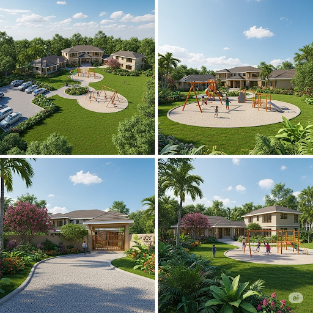
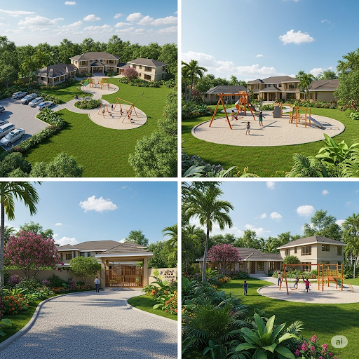

Hope in Action. Joy for a Generation.
A Christian foundation dedicated to transforming the lives of children in Uganda through education, healthcare, and community empowerment.
Explore Our WorkOur Sacred Mission
The purpose of JOY AFRICA INTERNATIONAL FOUNDATION is to improve the lives of children in different communities around Uganda by providing them with access to quality education, healthcare, protection, clean and safe water, and empowering them to reach their full potential.
- ✓ Provide a safe and nurturing environment for children.
- ✓ Improve access to quality education and healthcare.
- ✓ Protect children from exploitation, abuse, and neglect.
- ✓ Empower communities to take charge of their own development.
Our Life-Changing Projects
Your support brings these projects to life. Each one is a promise of a brighter future for a child in need.
 
1. The JOY AFRICA KIDS HOUSE
Project Overview: This is our most ambitious project: to build a safe, loving, and permanent home for homeless children in Uganda. The project includes buying land and constructing a full-service house with a playground, offering holistic support for their physical, emotional, and educational needs.
Impact: This home will be a sanctuary—a place where vulnerable children can find stability, receive quality care, and simply be children. It is a direct investment in their future, breaking the cycle of poverty and homelessness.

2. EVERYONE CAN DRINK HEALTHY
Project Overview: With 83% of Ugandans lacking access to safe water, this project is a matter of life and death. We will construct boreholes, wells, and rainwater collection tanks, and conduct community-wide training on hygiene and water safety.
Impact: Clean water reduces disease, keeps children in school, and empowers communities. By providing this basic human right, we unlock a healthier and more prosperous future for thousands of people.
3. Educational Sponsorship Program
Project Overview: Education is the key to breaking the chains of poverty. This program ensures children can attend and succeed in school by paying their tuition fees, providing essential school supplies, uniforms, and shoes, and offering after-school tutoring and mentorship.
Impact: We are seeing increased enrollment, reduced dropout rates, and improved academic performance. This program gives children the tools they need to build their own future.

4. Girls’ Dignity Program
Project Overview: Too many girls miss school during their menstrual cycle due to a lack of sanitary products. This program provides safe, reusable sanitary pads and comprehensive hygiene education to ensure girls can stay in school with confidence and dignity.
Impact: This simple intervention has a profound effect, dramatically reducing absenteeism among adolescent girls and empowering them to complete their education.
5. JOY CHARITY GIVE AWAY
Project Overview: An ongoing community outreach project to provide immediate relief to families in need. We distribute essential items including sanitary pads, scholastic materials for students, proper clothing, shoes, and direct tuition assistance to children kept out of school by financial hardship.
Impact: These events are a lifeline for struggling families, showing them that their community cares and providing tangible support that makes a real difference in their daily lives.
Your Support is a Direct Blessing
Your generous gift, no matter the size, bypasses administrative costs and goes directly to funding these life-changing projects.
🏦 Bank Transfer
Bank: EQUITY BANK UGANDA
Account Name: GONZAGA TUMUSIIME
Account Number: 1000102285006
📱 Mobile Money
Send directly to our secure line:
Number: +256 775 092 014